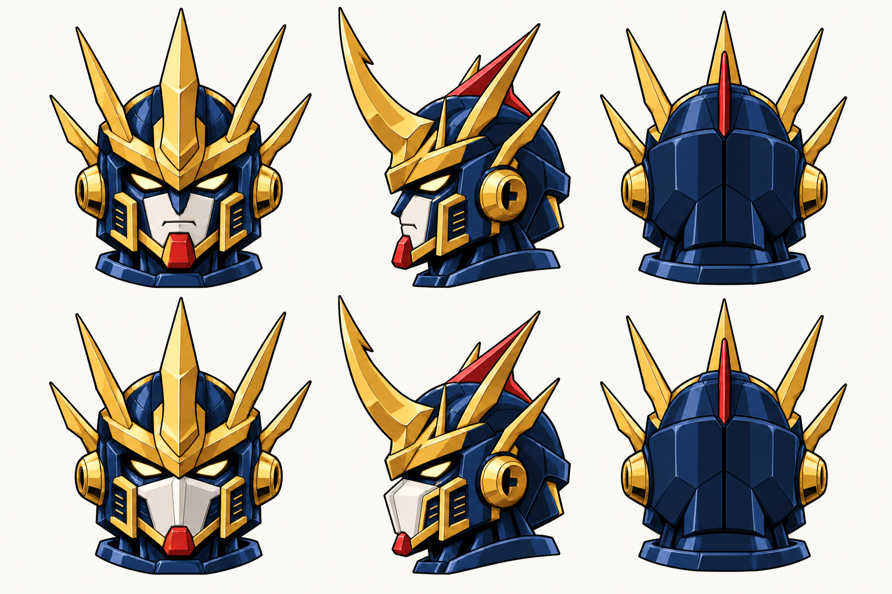

王者 · 三视设定 R12
长腿身形与补强背包，正侧背对照
沿已采用的藏蓝白红金机体与红鳍头盔，保留完整大腿、长胫甲和正常头部体积。素体与全装分别使用普通脸、闭合战斗面罩。每个视角单独绘制，按原图比例显示；可横向滚动并点开大图。
2026-10-21用户已认可本页当前七张源设计。采用范围 · 下一批货柜领袖
全装：同一身体，叠上钻、盾、炮与翼

右肘前屈、钻头朝机体前方；背视显示肘后装甲，钻体在前侧被遮挡。背包中央增设主喷口，两侧加挂成对长燃料罐；原双炮、翼组与低位推进舱保留。腿侧四个弹仓沿已选整机的三孔开口绘制。
素体：双手与基础身体
裙甲下露出大腿，膝关节、长胫甲和脚踝分开读清。卸装后保留基础肩甲、胸部双散热口与冠军徽记；背面显示基础承载结构。
头部：同一顶头盔的两个状态

燃料罐参考全装独角兽的大体量外挂储罐，沿王者自己的藏蓝白红金配色与挂架展开。
五个金色冠件与一片红色中线鳍共用。侧面显示红鳍鳍面，背面显示薄边；面罩只改变口鼻覆盖状态。
原稿比例对照与本次检查


- R10横向三视被用户指出矮壮，R11改为各面独立绘制；当前稿保留完整大腿、长胫甲和正常头壳体积。
- 素体保留完整双手、基础肩甲、胸前双散热口与冠军徽记；背面为挂点和脊板，脚跟为藏蓝壳。
- 全装正面右钻在画面左侧，前伸后短缩；侧向稿显示锥轴朝前，背面右肘前屈、前臂在身体前侧被遮挡，不再出现低垂朝后的锥尖。
- R12b虽收掉锥尖，仍把前臂挂低；R12c已根据实际正侧稿重排背面肘/腕高度，保留上臂原连接。
- 全装背包有一处中央金边深色主喷口，以及成对长象牙白圆柱燃料罐、蓝金箍座、红环和接管；正侧稿已补对应可见部分。
- 原双矩形炮保留前炮口/后封闭炮尾，侧向炮对相互遮挡；左盾保留正面徽饰和背面挂架，四个腿侧弹仓按R7实际三孔来源绘制。
- 普通脸/闭合面罩共用五金冠件和红色中线鳍。核心正面多露的红鳍边已收掉，背面中金角与薄红鳍分开可见。
三面逐张绘制，侧向稿仍带少量三分之四观察，个别板件、视角和右臂投影有手绘漂移；不是同一模型的精确正交投影。 当前为不透明白底设计板；未制作可编辑模型、关节/面罩运动、游戏裁切立绘、正常镜头或运行替换。 2026-10-21用户已认可本记录items所列当前源设计；源图认可不扩大为同模型、动作与运行。
实际源稿与检查实际提示词来源核对已采用头部与三视要求面罩转换示意配件分组
内置 image_gen 制作。新增背包与钻头朝向见本批记录。新三视仍为绘制源稿，未充作同一模型精确投影或运行验收；R10矮壮稿退出当前来源，原稿保留。